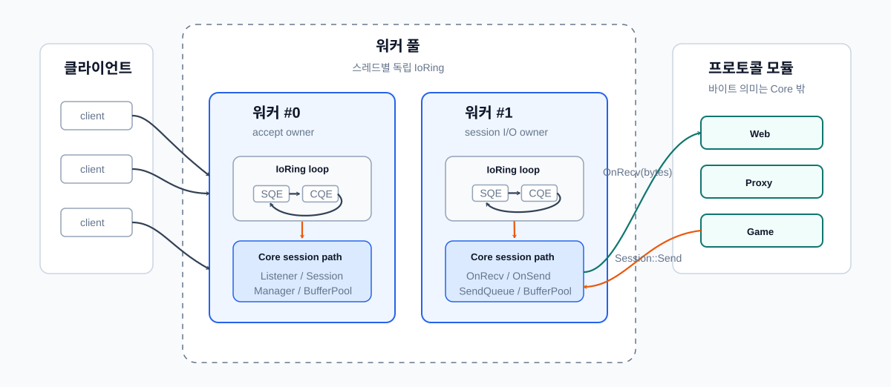
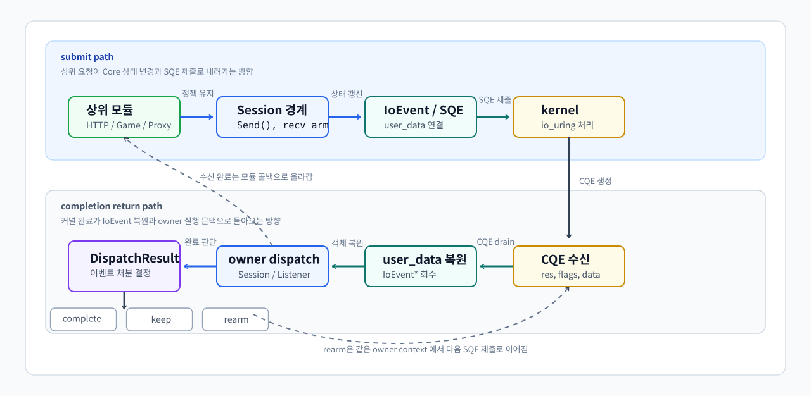

전체 구조
0.1 전체 구조
ServerCore는 Linux io_uring을 기반으로 구현한 비동기 서버 런타임입니다.
처음에는 게임 서버를 만들기 위한 기반 코드로 시작했지만, 구현을 진행하면서 TCP 연결 수락, 수신/송신, 시간 초과와 취소, 버퍼 소유권, 세션 수명주기, 스레드 간 작업 전달과 같은 요소들이 특정 게임 로직에만 종속되는 기능이 아니라는 점을 알게 되었습니다.
이들은 여러 서버 애플리케이션에서 공통적으로 필요한 실행 기반에 가깝다고 판단했고, 해당 기능들을 게임 서버 코드에 직접 묶어두지 않고 여러 프로토콜과 서비스가 공유할 수 있는 Core 런타임으로 분리했습니다.
Core의 역할은 바이트 스트림을 수신하고 송신하며, 비동기 I/O 완료 통지를 처리하는 것입니다. 다만 수신된 바이트가 HTTP 요청인지, 프록시 스트림인지, 게임 패킷인지는 Core가 해석하지 않고, HTTP, Proxy, Game은 Core 위에 올라가는 선택 모듈로 분리되며 각 모듈은 자신에게 필요한 파서, 라우팅, 패킷 프레이밍, Room 실행 모델과 같은 기능만 추가합니다.
구현된 런타임은 io_uring 기반 TCP 비동기 I/O 처리와 그 수명주기를 관리합니다. 각 소켓은 Session 단위로 감싸지며, 연결 수락, 수신/송신, 버퍼 관리, 시간 초과, 취소, 동시성 제어, 세션 수명주기 처리는 Core에서 담당합니다.
프로토콜 해석과 애플리케이션 정책은 상위 모듈로 분리됩니다. 예를 들어 Web 요청은 Core의 Session을 통해 수신된 뒤 HttpSession::OnRecv()로 전달되고, HTTP 파싱, 라우팅, 핸들러 실행은 Web 모듈에서 처리됩니다. 응답 데이터는 다시 Core의 Session::Send()를 통해 송신 경로로 내려갑니다.
HttpSession과 PacketSession은 모두 Core의 Session을 기반으로 동작하지만, 수신된 TCP 바이트 스트림을 메시지 단위로 해석하는 방식이 다릅니다. PacketSession은 [size][id][payload] 형식의 고정 헤더를 기준으로 패킷 경계를 판단하고, HttpSession은 HTTP 파서 상태를 유지하며 헤더 종료, Content-Length, chunked 본문, 파이프라이닝 여부를 해석합니다.
Core는 연결 수명주기와 비동기 I/O 처리, 버퍼 및 완료 이벤트 관리를 공통으로 담당하고, 스트림을 어떤 메시지 모델로 변환할지는 각 프로토콜 세션이 담당합니다. 이를 통해 게임 서버뿐 아니라 HTTP 서버, 프록시 서버, 패킷 기반 서비스 등 다양한 서버 모듈이 동일한 Core 런타임 위에서 동작할 수 있도록 설계했습니다.

0.2 주요 클래스
| Core | 설명 |
|---|---|
Listener |
소켓 bind/listen, 다중 완료 연결 수락, 연결 분산 |
Session |
fd 상태, 수신/송신 흐름, 닫힘 상태 전환 |
IoRing |
SQE 제출, CQE 비우기, user_data 기반 이벤트 복원 |
RingBuffer |
제공 버퍼 관리, 뷰 생성, 반환 정책 |
SendQueue |
대기 중인 송신 관리, 부분 송신 재시도, watermark |
Timeout / Cancel |
비활성 시간, deadline, 취소 요청 |
Owner Ring |
세션 I/O 상태 직렬화 |
0.3 실행 루프
실행 흐름의 중심은 IoRing입니다. IoRing은 사용자 객체를 IoEvent로 감싼 뒤 SQE에 연결해 커널에 제출하고, CQE가 도착하면 user_data에서 다시 IoEvent를 복원합니다. 복원된 이벤트는 해당 Session 또는 Listener로 dispatch됩니다.
이때 IoRing은 완료 통지를 사용자 객체로 되돌리는 실행 장치이고, Session은 그 완료가 연결 상태, 수신/송신 큐, 버퍼 반환, 종료 절차에 어떤 의미를 갖는지 판단하는 소유 객체입니다.
실행 루프는 다음 다섯 구간으로 나눌 수 있습니다.
| 구간 | 책임 | 의미 |
|---|---|---|
| submit | IoEvent를 SQE에 연결하고 커널에 제출 |
사용자 객체와 커널 작업을 묶는 지점 |
| kernel | io_uring이 비동기 작업을 수행하고 CQE 생성 |
사용자 코드 밖에서 I/O가 진행되는 구간 |
| cqe restore | IoRing이 CQE를 꺼내 user_data에서 이벤트 복원 |
커널 완료가 런타임 객체로 돌아오는 경계 |
| dispatch | 복원된 이벤트를 Session 또는 Listener 콜백으로 전달 |
완료 통지를 소유 객체에 넘기는 경계 |
| disposition | 콜백 결과로 이벤트 처분 결정 | 완료, 유지, 재제출 중 무엇을 할지 판단 |
세션 콜백은 이번 CQE로 이벤트가 끝났는지, 같은 multishot 제출이 계속 살아 있는지, 또는 같은 이벤트 객체로 새 SQE를 재제출했는지를 반환합니다. 이 결과에 따라 IoRing은 이벤트를 정리하거나 유지하거나 다시 제출 상태로 둡니다.
전체 흐름은 다음과 같습니다.
상위 모듈
-> Session::Send() / OnRecv()
-> Core Session 상태 변경
-> IoEvent 생성
-> IoRing submit
-> kernel io_uring 처리
-> CQE 도착
-> IoRing user_data 복원
-> Session / Listener dispatch
-> DispatchResult에 따라 완료, 유지, 재제출
이 구조 덕분에 Core는 프로토콜을 해석하지 않으면서도, 비동기 I/O 완료, 버퍼 수명, 세션 종료, 재제출 여부를 일관된 실행 모델 안에서 처리할 수 있습니다.